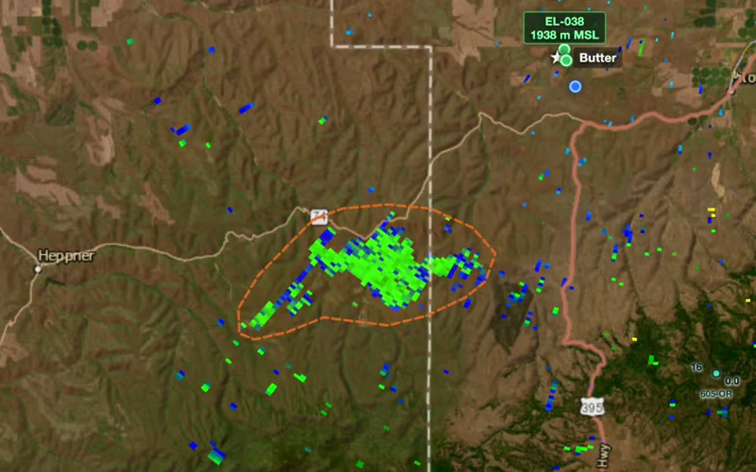
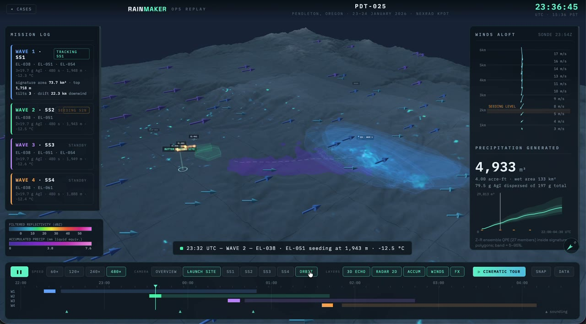
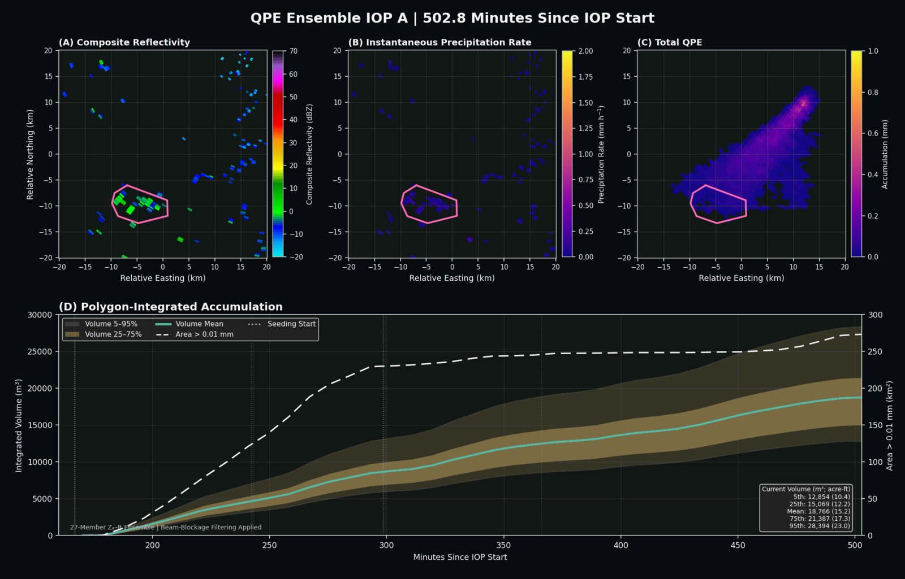

Radar & Satellite Data · Validation · Scientific Software
Martin Satrio, Ph.D.
Meteorological Radar Scientist at Rainmaker · Norman, OK
I build the analyses and software Rainmaker uses to measure the effects of its cloud seeding operations, combining radar, satellite, model, and drone data. That covers the science (QPE, dual-pol analysis, identifying seeding signatures) and the tools analysts use every day.
Before Rainmaker, I spent a decade at the University of Oklahoma studying supercells and tornadoes with mobile, airborne, and operational radar data, ending with a postdoc at CIWRO. I hold a Ph.D., M.S., and B.S. in Meteorology and a B.A. in Mathematics from OU.
What I do
Radar QPE & validation
I designed Rainmaker's first quantitative precipitation estimation framework and the pipeline used to find, isolate, and quantify seeding signatures in radar data.
Scientific software
I write the tools behind the analysis, including a web-based radar viewer, a 3-D mission replay, and automated reporting, all in Python and JavaScript with versioned releases and automated tests.
Communicating results
I turn analyses into figures, validation summaries, and visualizations for clients, business development, and state water-resource agencies, adjusting the detail for each audience.
Selected work

Radar Viewer
An internal web tool for loading post-operation data, outlining signatures, and running QPE.

3-D Mission Replay
A full seeding operation replayed in 3-D: drones, radar echoes, soundings, and precipitation.

QPE & validation pipeline
A 27-member QPE ensemble and an end-to-end workflow for validating seeding outcomes.
Recent
All publications →- First-author paper on the 2025–2026 Rainmaker season, covering 71 radar-observed precipitation enhancements across all program areas, now in revision at Atmosphere.
- Presented “Evolution of Radar Seeding Signatures: Insights from the 2025–2026 Rainmaker Season” at the AMS Summit (25th Conf. on Planned and Inadvertent Weather Modification), Madison, WI.
- Published “The Effects of a Veer–Back–Veer Wind Profile and the Effective Inflow-Layer Depth on Supercell Evolution” in Weather and Forecasting.
- Served as lead radar analyst for Rainmaker's Pendleton, OR operations. I identified 55 seeding signatures across 52 Pendleton IOPs.
- Joined Rainmaker as a Meteorological Radar Scientist after my postdoc at CIWRO.